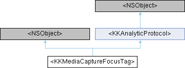

拍摄需要的动态设置标签 More...
#include <KKMediaCommonTag.h>
Inheritance diagram for <KKMediaCaptureFocusTag>:

Properties | |
| float | focusTF |
| 最小光圈F22，用于星光效果 | |
| float | focusSF |
| 小光圈，无虚化 | |
| float | focusMF |
| 中光圈，有虚化 | |
| float | focusMF2 |
| 中光圈，有虚化，远景长焦 | |
| float | focusLF |
| 大光圈，虚化强 | |
| float | focusLF2 |
| 大光圈，虚化强，远景长焦 | |
Additional Inherited Members | |
 Instance Methods inherited from <KKAnalyticProtocol> Instance Methods inherited from <KKAnalyticProtocol> | |
| (nullable NSDictionary *) | - metadataInfo |
| 用来分析资源的字典 | |
| (NSDictionary *) | - metadataInfoFromTagKey:propertyNames: |
Detailed Description
拍摄需要的动态设置标签
The documentation for this protocol was generated from the following file:
- Shine/Shine/Sections/EffectSection/Model/PresetTag/KKMediaCommonTag.h